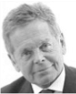
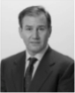
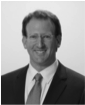
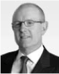
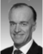
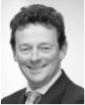
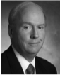
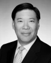

Board of Directors

Independent Non Executive Chairman
Simon Murray was appointed to the Board as Chairman in April 2011. Mr Murray is the founder and current Chairman of GEMS Limited, a private equity investment group operating across Asia. Previously, Mr Murray led Jardine Matheson’s engineering and trading operations from 1966 to 1980, after which he set up Davenham Investments, a project advisory company. more …

Chief Executive Officer
Ivan Glasenberg joined Glencore in April 1984 and has been Chief Executive Officer since January 2002. Mr Glasenberg initially spent three years working in the coal/coke commodity department in South Africa as a marketer, before spending two years in Australia as head of the Asian coal/coke commodity division. Between 1988 and 1989, he was based in Hong Kong as manager and head of Glencore’s Hong Kong and Beijing offices more …

Chief Financial Officer
Steven Kalmin joined Glencore in September 1999 as general manager of finance and treasury functions at Glencore’s coal industrial unit (now part of Xstrata). Mr Kalmin moved to Glencore’s Baar head office in October 2003 to oversee Glencore’s accounting and reporting functions, becoming Chief Financial Officer in June 2005. Mr Kalmin holds a Bachelor of Business from the University of Technology more …
Independent Non-Executive Directors
Independent Non-Executive Director
Peter Coates is currently a non-executive director and chairman of Santos Ltd., and a non-executive director of Amalgamated Holdings. Until recently, he was a non-executive director and chairman of Minara, a position he had held since May 2008. Mr Coates has occupied many senior positions in a diverse range of resource companies, including those mining silver, lead, zinc, nickel, iron ore, bauxite and coal. more …

Independent Non-Executive Director
Leonhard Fischer was appointed chief executive officer of RHJ International in January 2009, having been co-chief executive officer since 2007. He is also chairman of the Kleinwort Benson Group and is a member of the board of directors at Julius Baer, AXA Konzern and Arecon. Mr Fischer was previously a non-executive director and member of the audit committee at 3W Power Solutions S.A more …

Senior Independent Non-Executive Director
Anthony Hayward was group chief executive of BP plc from 2007 to 2010, having joined BP in 1982 as a rig geologist in the North Sea. Following a series of technical and commercial roles in Europe, Asia and South America, he returned to London in 1997 as a member of the upstream executive committee. He became group treasurer in 2000, chief executive for BP upstream activities and member of the main board of BP in 2003. more …

Independent Non-Executive Director
William Macaulay is the chairman and chief executive officer of First Reserve Corporation, a private equity investment firm focused on the energy industry, and has been with the company since its founding in 1983. Prior to joining First Reserve he was a co-founder of Meridien Capital Company, a private equity buyout firm. From 1972 to 1982, he was with Oppenheimer & Co., where he served as director of corporate finance more …

Independent Non-Executive Director
Li Ning has been an executive director of Henderson Land Development Company Limited since 1992. He was also an executive director of Henderson Investment Company Limited from 1990 to 2010. He has also been an executive director of Hong Kong (Ferry) Holdings Company Limited since 1989. Prior to joining the Henderson Group, he began his career in the banking industry with Chekiang First Bank Limited. more …